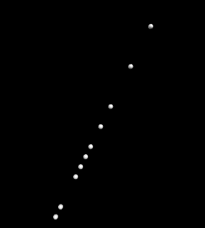
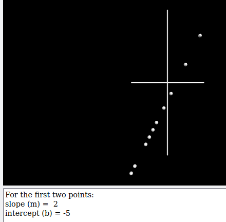
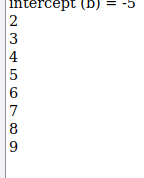
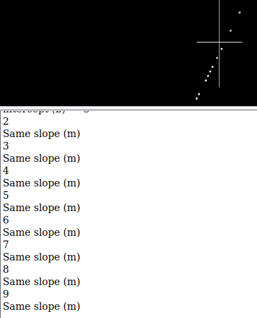

x = [5, 1, -10, -5, -4, -9, -6, -3, -1, 9]
y = [5, -3, -25, -15, -13, -23, -17, -11, -7, 13]
| Notes and Code | Outcome |
|---|---|
one Lines 1 and 2 we make two
lists of the x and y values. Any value in a list can be referenced using the index for its location. The first value in the x list would be referenced by x[0] (the value is 5). The second item in the x list would be x[1] (which is equal to 1).
on Line 4, we make a
on Line 5, we set the position of the spheres to the x and y values that go with the index vec( 5, 5, 0).
The second time through the loop vec( 1, -3, 0 )
|

|
Programatic Linear RelationsThere are a number of ways to do this, but we'll try this one:
m and b.
Show Notes ▼
|

|
|
Now we need to make a loop that starts from the third point and goes to the end of the
x list.
Show Notes ▼
As you can see, this prints out the values 2 through 9. When given two values, the
range function interprets the first as the starting value and the second as the stop.
|

|
Comparing slope and intercept values.Now assume that each time through the loop we calculate the slope and intercept and call themnew_m and new_b. We can check to see if the new values are the same as the original values. If they're not, we print that the relationship is not linear and break out of the loop.
Show Notes ▼
Peek at the code for the new_m and new_b: Show Notes ▼
|

|
TestingClick the link below to get a new dataset. There will be a 50-50 chance that it is a linear relation.
Generate Dataset
Show Notes ▼
|
|
Plotting points
You could go in by hand and draw each point as a sphere, however, it is easier if we use a loop.